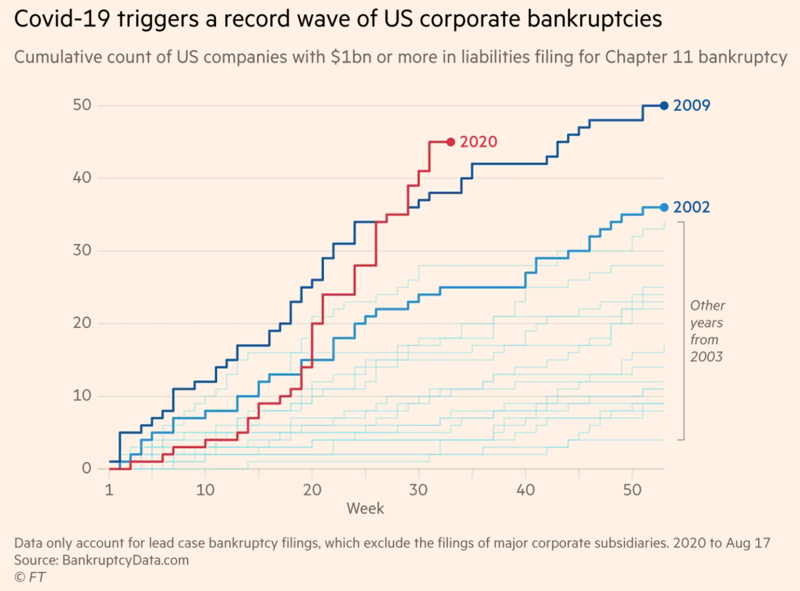

|
September 5, 2020 How to deal with the coming wave of corporate bankruptcies? Businesses have accumulated lots of debt since the beginning of the Covid-19 health and economic crisis. High corporate debt creates two sorts of issues. The first one is debt overhang that hinders corporate investment – see this post on debt overhang and public policies aimed at fixing it. The second issue is financial distress. Corporate bankruptcies are now rising around the world – see for instance Pandemic triggers wave of billion-dollar US bankruptcies in the Financial Times. In this post, we are going to see that lack of coordination between creditors can lead to inefficient decisions. Consider a firm that accumulated debt obligations worth 60 (you can think of this number as a flow of monthly interest payments or as a stock of debt; both interpretations are equivalent in this simple example.) The firm owns assets such as plants and equipment that are pledged as collateral to creditors and that could be liquidated at price 30. The firm generates profits equal to 40. Since profits (40) are less than the debt obligation (60), the firm cannot repay its debt. What would you do if you were the creditor of this firm? You could seize the firm's assets and sell them at liquidation value. Doing so is clearly inefficient, however, because the firm's continuation value (40) is greater than the liquidation value (30). The creditor's best option is therefore to agree to renegotiate the debt down to 40, so that the firm can continue its operations and repay 40 to the creditor. In practice, things are more complicated because firms often have several creditors. For example, the firm may owe 30 to a bank and 30 to a supplier. Is the bank willing to unilaterally renegotiate the debt to allow the firm to survive? This would require the bank to lower its claim down to 10. If the bank does so, it earns 10. If, instead, the bank does nothing and the firm is liquidated, the bank earns half the liquidation value, that is, 15. Hence, the bank would rather let the firm be liquidated even this is economically inefficient. Following the same logic, the supplier would also rather let the firm be liquidated. What is happening is that if a creditor accepts a haircut on its claim to prevent the liquidation of the firm, this increases the economic value created by the firm but part of this value is captured by the other creditor. The result is that both creditors hold on to their claim and the firm is liquidated, which is inefficient. What can be done? If creditors can coordinate, they should agree to both lower their claim to 20 to prevent the liquidation of the firm. That would be optimal for both creditors (they get 20 instead of 15) and economically efficient. However, in practice, coordination is difficult. One reason is that creditors often have imperfect information about claims held by other creditors and about the liquidation value of the firm's assets. The problem only gets worse when firms are large and complex and when there are many different creditors. How to get around coordination problems? This is the job of bankruptcy judges and investment bankers specialized in corporate restructuring. When a firm cannot pay its debt, it files for bankruptcy. The bankruptcy judge assesses the firm's debt obligations, continuation value and liquidation value, and leads the negotiations between the firm's owners and the creditors. A well-designed bankruptcy law is one that leads to debt renegotiation and firm continuation when the firm's continuation value is higher than the liquidation value, and to liquidation when not. Given the forthcoming wave of corporate bankruptcies, the efficiency of bankruptcy procedures will be key for quick economic recovery. |